تعلم الآلة والتعلم العميق
THE LEARNIG ML & DL
بحث معمق ومفصل حول تعلم الآلة والتعلم العميق مع مختبر آلة ذكية
خطة البحث
تهيد لمقدمة وخطة تعلم الآلة و التعلم العميق
تعد محاولة تفكيك كيفية تعلم التقنية واحدة من أكثر المجازفات غزارة و إثارة إذ لم ينبع اهتمام الذات البشرية بذكاء الآلة من رغبة في الأتمتة فحسب بل نموذج رياضي معقد منمذج للادراك البشري، بدأت القصة مع تعلم الآلة حين تم إدراك أن الأكواد المصيوغة في بيئة العمل مستند تماما ضمن تعقيد للإستقراء والتعلم الذاتي والذي قاد للتغلغل إلى ميكانيزم أعمق بنيت تحت مصطلح التعلم العميق الذي جاء كمحاكاة للشبكة العصبية ليصيغ الخوارزميات كتقاطع مذهل بين الرياضيات وبيانات البعد الثالث ليحاكي الإبداع البشري ومن هذا المنطلق يسعى هذا البحث إلى إماطة اللثام عن هذا الإعجاز ليطرح علينا ماهية تعلم الآلة والتعلم العميق ?
المباحث والمطالب
مطلبين مدرجان تحت كل مبحث ثلاث مباحث اساسية
أطر مفاهمية وآليات، معمار وشبكية، التحليل المقارن والحدود المنهجية، نطاقات ونماذج التشغيل، تحديات، المشروع المطلق
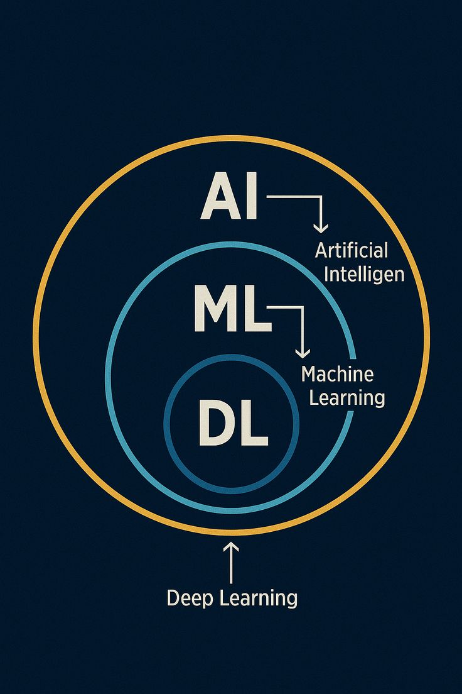
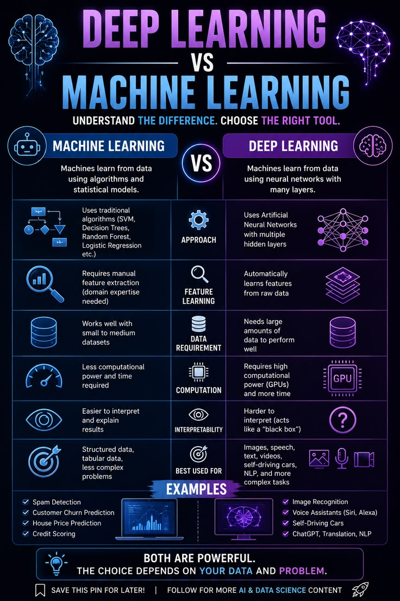
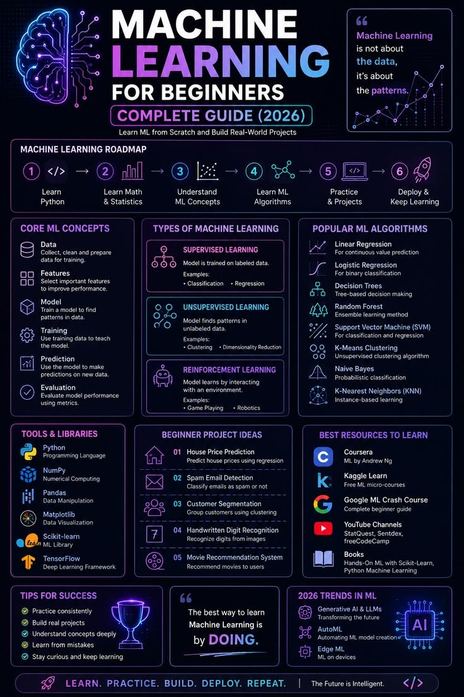
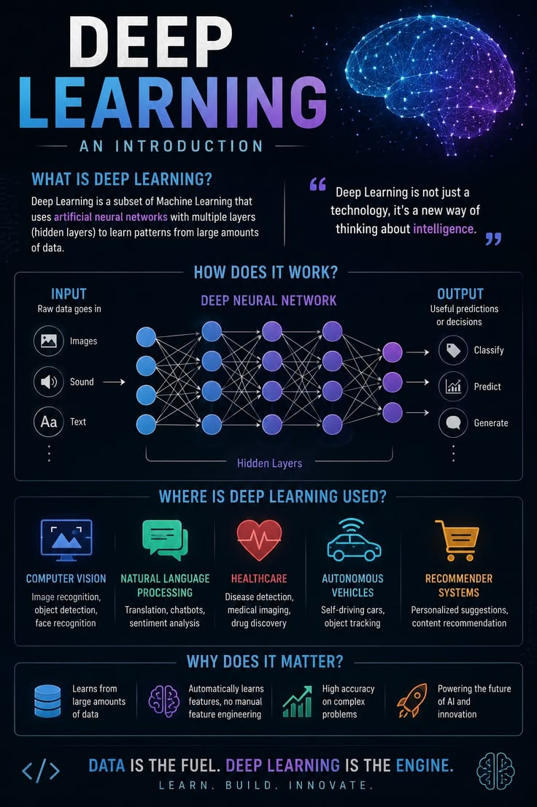
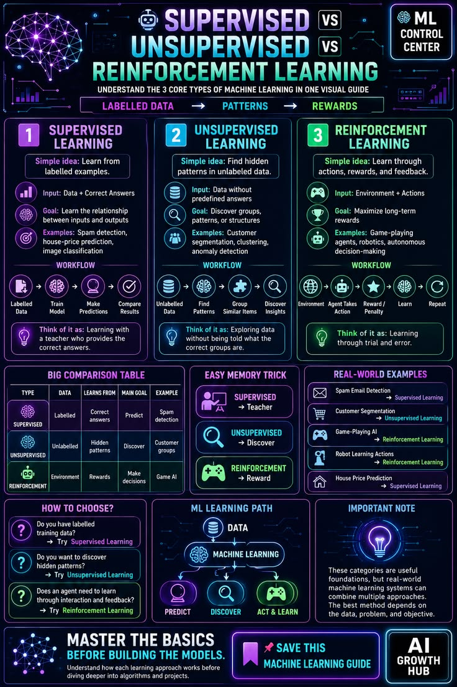
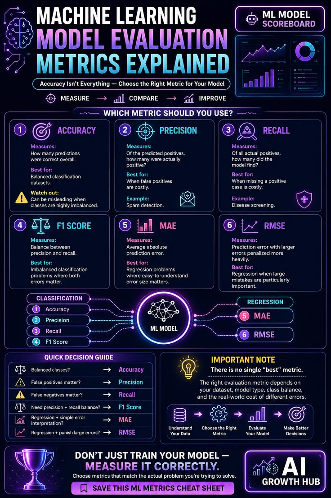
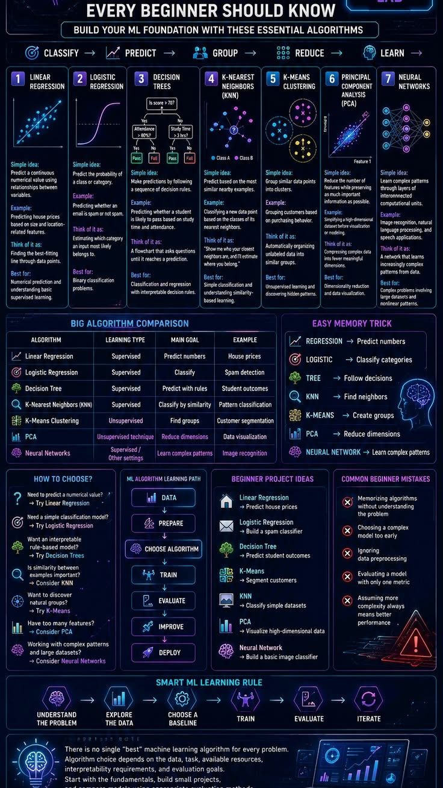
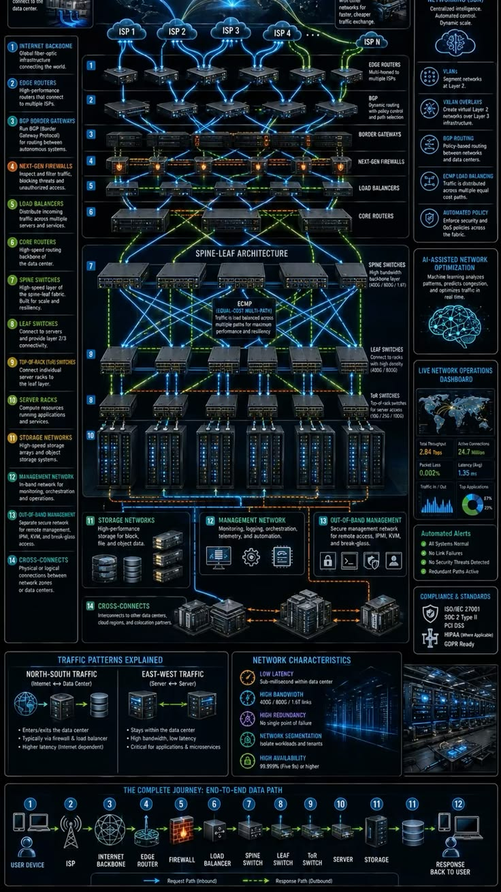
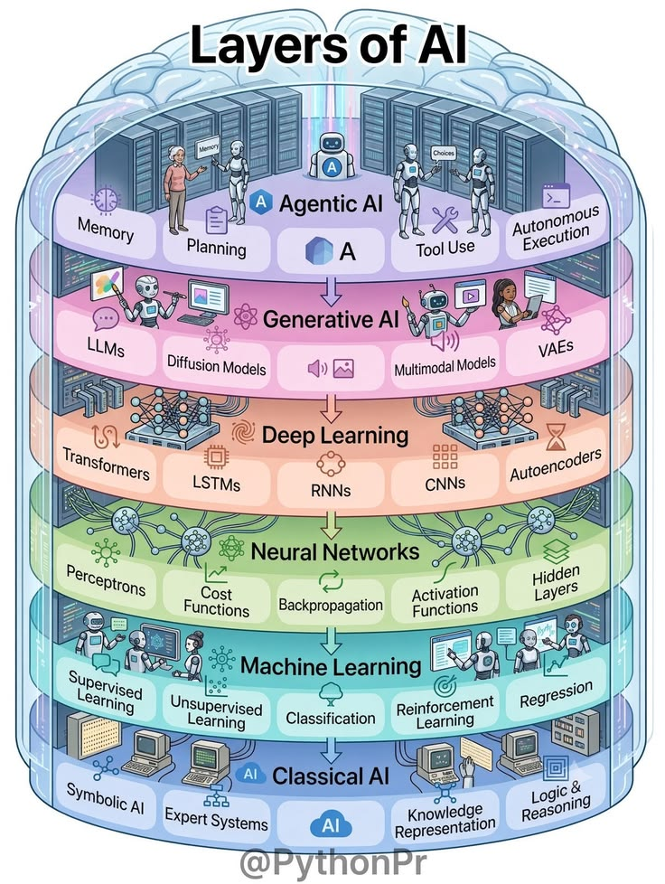
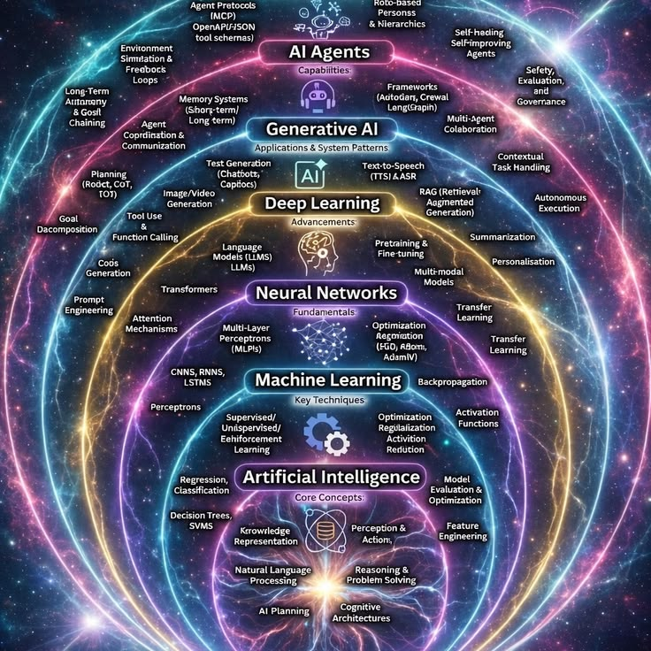
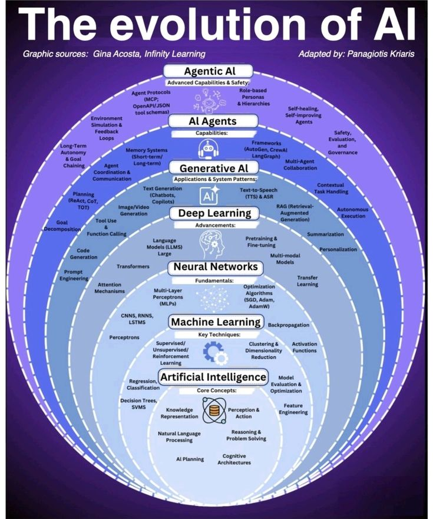
Click to light, click again to read.
نموذج ML & DL
آلة ذكية و متنبئ بالسلاسل الاقتصادية
آلة ذكية لمعرفة سلامة المنتجات في المخزون و نموذج ذكي يتوقع ويقترح أفضل الاستراتجيات لتعظيم الأرباح
تدريب بحجم بيانات 2TB
تقوم الآلة الذكية بتحديد المنتجات المتضررة وتصنيف السليمة من المتضررة
تقوم ايضا ب
بتحديد العملات والقيام بمهام أمين صندوق
نموذج ذكي في بيئة تدريب معززة
يعتمد على الاشراف وبدونه
مهارة خاصة
يقوم النموذج الذكي بادراج الاحتمالات المتعلقة باسعار السنوات القادمة وافضل الاستراتجيات المتعبة لحسن التسيير وتعظيم الأرباح
كاشف ترددات فيزيائية
يقوم باظهار الحركات المحجوزة خلف جسم مادي مستند للبعد الرابع في التوزيع البياني لجداء الأوزاء في شبكات مدرجة بخوارزميات تحاكي الفيزياء الملموسة للكيان وتحديد طبيعته
ملخص
Choose your fav
Three ways to start. Light one up to see what it holds.
Learning
GEN
تواصل معي
Send Me A Wish
Write it on the lantern and let it go. We read every one and reply within two days.